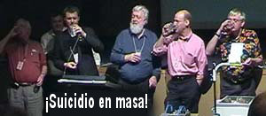

Sí, se puede vender cualquier cosa en eBay

La gente de eBay, por razones que todavía son vagas, retiraron de pronto la semana pasada un ítem “caliente” que había alcanzado más de US$ 28.000 en ofertas. Una mujer de Hollywood (Florida), Diana Duyser (52) había sacado a remate medio emparedado tostado de queso de un niño de ocho años. Dijo que lleva una imagen de la Virgen María. Vean la ilustración…
En los últimos años hemos tenido a la Madre Teresa en un panecillo, a Jesucristo en una tortilla, y al Che Guevara en una pared de yeso, por no mencionar al Pato Donald en el grano de una puerta de contrachapado, pero ninguno de ellos alcanzó jamás tal precio. Duyser dijo que ella le había dado un mordisco luego de hacerlo hace diez años y, para su sorpresa, vio una cara devolviéndole la mirada desde el pan. Para asegurarse de preservar este milagro, puso el emparedado en una bolsa de plástico transparente y lo guardó en su mesa de luz. Luego decidió que quería “compartirlo con el mundo”, dijo, y lo puso en eBay, donde pasó de US$ 9,99 a más de US$ 28.000 en unos pocos días.
El artículo fue visitado por compradores curiosos cerca de 100.000 veces antes de que eBay decidiera sacarlo porque “no permiten publicaciones pensadas como bromas”. Duyser, sin embargo, insistió en que no era broma. Y, agregó, “el emparedado fue cocinado sin aceite ni manteca”. No sólo eso, sino que nunca le apareció un brote de moho.
Amigos, ese último detalle casi nos convencen… Pero vean la observación del lector Jon Lee, más adelante.
Pero, ¡sorpresa! ¡Sin aviso, eBay volvió a poner el artículo tan rápido como lo había sacado! Sospecho que hubo abogados involucrados… El emparedado bendito ahora aparecía con una oferta inicial de US$ 3.000 (una baja significativa) y, fascinados, nos sentamos de nuevo a esperar que esta farsa religioso-financiera se resolviera sola. Sólo minutos antes de que la subasta cerrara, el precio era de US$ 26.000, y subió a US$ 28.000 con la campana final. Este ítem milagroso ahora es propiedad de un casino on-line, donde podemos asumir que será reverenciado como un objeto de adoración como el Sudario de Turín, y le rezará un rebaño de apostadores que dejarán de lado momentáneamente las patas de conejo y otros talismanes de la suerte para darle a este último objeto mágico una oportunidad de mejorar su desempeño en las máquinas tragamonedas. ¿En serio? Sí, porque el vendedor de la comida petrificada les hizo creer que para ella había exhibido ese tipo de poderes sobrenaturales. Publicó esta descripción, [de la que el traductor suprimió los errores gramaticales y ortográficos originales]:
¡Usted está viendo un artículo extraordinario fuera de este mundo! Hice este emparedado hace 10 años, cuando le di una mordida, vi una cara que me miraba, era la Virgen María devolviéndome la mirada, quedé totalmente sorprendida, me gustaría señalar que no hay moho ni desintegración, el artículo no fue preservado ni nada, se lo conservó en una caja de plástico, no una especial que extraiga el aire o los potenciales mohos o bacterias, es como un milagro, se conservó solo lo que considero un milagro en sí mismo, la gente me pregunta si he tenido bendiciones desde que ella estuvo en mi casa, siento que sí, gané US$ 70.000 (en total) en diferentes ocasiones en el casino cerca de mi casa, puedo mostrarle los recibos al que haga la oferta más alta si le interesa, me gustaría que todos supieran que creo que esta es la Virgen María Madre de Dios, es mi creencia solemne, pero son libres de creer que es quien ustedes quieran que sea, no estoy estafando a nadie, me gustaría que todos los potenciales ofertantes sepan que esto tuvo mucha atención de la gente de los medios en todo el país, el martes 16 de noviembre de 2004 el Miami Herald presentará una historia en su periódico sobre este fenómeno, también aquí en Florida del Sur, la historia ha sido relatada en toda la nación en emisoras de radio etc. También me gustaría que los que entran a mirar entiendan por qué decidí mantener la identidad de los ofertantes más altos en privado, una vez listé esto antes y recibí muchos emails algunos fueron comentarios amables y divertidos pero otros tenían intenciones crueles y vengativas, no me importa no los voy a leer de todas maneras, pero no deberían perder su tiempo siendo vengativos, pido que sólo me envíen preguntas serias sobre el artículo, no bromas ni comentarios ridículos, si tiene una pregunta auténtica siéntase libre de enviarme un email, no estoy estafando a nadie estoy vendiendo este artículo siempre y cuando haya una oferta seria con un pago, ¡SÓLO OFERTANTES SERIOS! ¡¡NO OFREZCAN SI PIENSAN RETIRAR LA OFERTA O TONTEAR, NO HAY RESERVA EN ESTA SUBASTA! ¡¡ESTOY EMPEZANDO EN EL MÍNIMO EN EL QUE TENGO LA INTENCIÓN DE VENDER ESTE ARTÍCULO!!
No, señora, no estamos “viendo” un milagro, estamos viendo un emparedado para un niño de 10 años desecado y guardado en una bolsa de plástico, un objeto repugnante con una marca de quemadura que parece una cara cuando se la gira como usted la muestra. Pienso que usted es una persona tonta e ingenua, aunque las personas que han hecho ofertas sobre esta porquería inútil están varios órdenes de tontería por encima de lo que usted tenga, obviamente… y usted también los aventaja a la hora de ir al banco.
Sobre este tema, el lector Jon Lee escribió:
Noté que ella afirma que [al emparedado] no le brotó ningún moho, como si esto implicara que es especial. Cuando estaba en la universidad pasé por el microondas una porción de piza sobre un plato de papel durante demasiado tiempo; la pizza se volvió dura como piedra y se unió al papel y era incomible. Antes que tirarla (y siendo los repugnantes alumnos de primer año que éramos), mis compañeros y yo decidimos colgarla en la pared como decoración. Varios meses después, cuando fue hora de dejar el dormitorio por las vacaciones de verano, la pizza todavía estab aen la pared y se veía igual que el día en que la colgamos; tampoco tenía ni un brote de moho. Lamentablemente, la pizza no tenía rostros identificables en ella, de otro modo la hubiera vendido en eBay.
Qué verguenza darse cuenta de que hay tanta gente por ahí que de verdad quiere ser dueña de un emparedado fosilizado, y pagarán un hojo de la cara por él. Sé que en el próximo viaje que haga fuera de los EE.UU., la gente se me acercará y me preguntará cómo el país más poderoso de la Tierra puede tener ciudadanos tan locos. Y no tengo una buena respuesta para darles…
Albergo el deseo de que quizá este es un fraude fantástico que algún escéptico ha imaginado por allí, pero debo admitir que si se me hubieran acercado y me hubieran preguntado qué tan posible era semejante impostura, habría recomendado contra ella creyendo que excedía hasta la locura más grande imaginable. Me hubiera equivocado…
Y después de todo, es sólo medio emparedado…
Revisando un cuento de hadas
Mi buen amigo Donald Simanek tiene una extensa y fascinante fuente de datos en http://alcor.concordia.ca/~vpetkov/links4.htm que ataca con efectividad el tema de las hadas y la película realizada sobre el tema en 1997. Una dama que vio esa referencia se inquietó lo bastante como para escribirle:
Vi por primera vez la película “Fairytale” (“Cuento de hadas”) [vea http://www.randi.org/library/cottingley/movie.html [en inglés]] cuando se dio en los cines hace varios años.
Aunque prefiero decir que tengo una mente abierta en su mayor parte, soy escéptica en muchas formas, sólo porque he sido pasada a llevar por la gente durante toda mi vida. Esa película cambió mi vida para siempre. No conozco su parecer sobre el tema, pero el mío es éste. He criado a mis hijos, que ahora tienen, mi hijo, 16 años y mi hija, 11, para que crean en ellas. No estoy seguro de que mi hijo siga creyendo, pero mi hija sí.
Empecé un jardín el año pasado y este año lo amplié; está totalmente diseñado para las hadas. Cada año de aquí en adelante, espero hacerlo más y más creíble. Aunque nunca he visto una, eso no significa que dejaré de esperarlo. Por lo general soy una mujer muy estable y creíble. Pero es lindo tener algo en qué creer. A veces creo que realmente podrían estar allí. Supongo que usted piensa que estoy loca, pero, digan lo que digan, nuestro cuento de hadas ha sido divertido. Con la llegada del invierno y el jardín que empieza a morir, pasaré mi tiempo libre de invierno pensando cómo crear casas para hadas a partir de las enormes raíces de árbol que rescaté durante el verano. Su artículo es interesante, me pregunto si las imágenes son reales, en primer plano ciertamente no lo parece. Pero quizá en los retoques realizados a partir de los originales alguien los arregló para conformar a la prensa. Siempre hay esperanza.
Es difícil entender que una madre intente mutilar en tal forma a sus hijos, aunque el hijo parece haber escapado ya al engaño de ella. Otra carta en relación con las hadas que figura en la colección de Simanek levanta mis sospechas de que el autor, que se refiere a las fotos de Cottingley tomadas casi hace un siglo por dos niñitas (vea http://www.randi.org/library/cottingley/ [en inglés]), puede haber visto algo que era completamente real, pero lo malinterpretó. Lean esto y vean si estamos de acuerdo…
Expreso una opinión sobre las fotos tomadas de las hadas con las niñas, creo que hay una posibilidad de que sean reales, pero quizá podrían no serlo, vi un hada una vez en México, en Durango, en la casa de mi abuela, cuando tenía sólo 6 aos, pero la razón de que tengo dudas sobre las fotos de las hadas es que la que yo vi estaba desnuda y no tenía ropas, el hada era violeta, todo su cuerpo era violeta no un color humano, tenía alas, su taaño era más o menos de cuatro centímetros, y sólo la vi por unos 7 u 8 segundos. Luego cuando llamé a mi amiga Sandra para que fuera a ver el hada, desapareció dentro de una flor, esto ocurrió en el jardín de mi abuela. Y creo que lo que vi era real aunque la gente puede no creerme, también creo que el cuerpo del hada estaba hecho, o parecía estar hecho, de una planta, porque se veía muy frágil. Como sea, de lo que fuere que estuviera hecho, la vi y creo en lo que vi, y sé que tiene que haber más hadas del tipo que yo vi. Si existen o no, sé que lo que vi parecía muy real.

Bien, he pensado un poco en esta criatura violeta, desnuda, frágil y alada de más o menos 4 centímetros, vista entre las flores en México. Examinen la ilustración adjunta, que cumple con todos esos factores descriptivos. Este es un espécimen de Orthemis discolor, una libélula que se halla con frecuencia en México, y mide 4 cm. Un niño de seis años fácilmente podría transformar este avistamiento en un encuentro con un hada, ¿no creen?
Una tortuga cara
La lectora Lisa Zawadski comenta sobre los productos ofrecidos por el sitio del “Maestro” Ilchi Lee, nombrado en un artículo que publicamos la semana pasada:
El Cerebro de Poder de la banda de la Respiración Cerebral es un robo, porque cuesta US$ 90. ¡Fíjense en la Tortuga Sanadora de más de US$ 4000! Tiene la “más grande energía sanadora de todos los productos de sanación”. Supongo que es sólo una coincidencia que también sea la más cara. ¡Y la Tortuga Sanadora también tiene un gran Feng Shui! ¿Por qué la gente sigue asaltando licorerías y yendo presa cuando esta clase de delito es mucho más fácil?
El mundo del audio está excitado
John Atkinson, editor de la revista Stereophile, anda por ahí agitado tratando de explicar las declaraciones recientes de su columnista, Art Dudley. Inventa el disparate que sigue, en un foro dedicado a los arcanos del audio:
Con respecto al Desafío de Randi, está diseñado para que la única forma en que alguien puede obtener el millón de dólares es probar que pueden detectar el Dispositivo en Prueba por medios puramente “psíquicos”. Si hay una causa real para la diferencia sónica, entonces Randi no tiene que pagar, incluso si la prueba arroja resultados positivos. Como escribió Art, “intelectualmente deshonesto”.
Le respondí a Atkinson, quien bien pudo haber sido mal informado por Dudley, y que aparentemente pensó que sus mentiras nunca llegarían a mi atención:
No tengo idea de dónde sacó esa extraña idea de que “[el desafío] está diseñado para que la única forma en que alguien puede obtener el millón de dólares es probar que pueden detectar el Dispositivo en Prueba por medios puramente ‘psíquicos’”. ¿O Dudley le dijo eso para darle validez a su diatriba?
No, Sr. Atkinson, para artículos tan obviamente chiflados como las Piedras Shakti y otros artículos similares, el aspirante sólo tiene que detectar si se están usando o no… de cualquier forma que lo desee.
Atkinson nunca respondió a este pedido, y también escribió, en un intento desesperado por ofuscar su insostenible posición:
La ciencia no puede explicar (aún) la rabdomancia, pero parece que hay algo en ella. (Y a propósito, ¡es muy divertido observar a Zwinge y otros “escépticos profesionales” dar vueltas en torno a este tema en particular!)
Bien, para su información, hemos probado a grandes cantidades de zahoríes en todo el mundo, bajo sus circunstancias, usando sus materiales, con su total acuerdo en las reglas y cómo realizar las pruebas, y todos han fallado en probar sus capacidades, siempre. La rabdomancia es la capacidad que se nos afirma tener con más frecuencia, de hecho. Sólo el mes pasado, en Alemania, observé las pruebas realizadas a dos destacados zahoríes, quienes luego de aprobar el protocolo doblemente ciego obtuvieron exactamente lo que podría esperarse del azar… como esperábamos. La rabdomancia no funciona, pese a la opinión de los aficionados, y sencillamente no hay nada allí que explicar. Atkinson no lee demasiado fuera de su propia revista, parece. En cuanto a nuestro “dar vueltas” en torno al tema que se festeja tan alegremente, son Dudley y Atkinson (y muchos de los otros “expertos” en audio) quienes están bailando el fandango frenético. Los escépticos nos enfrentamos con el desafío de frente, sin coreografía, y sin vacilaciones ni problemas. Dudley y Atkinson sencillamente no están informados, y deciden seguir ignorando la verdadera naturaleza de esta confrontación. Un miembro del foro de audio preguntó, con bastante sensatez:
¿[…] por qué nadie de la comunidad de críticos de audio se presenta y obtiene el premio [de la JREF]?
¡Que es exactamente lo que yo he estado preguntando durante años! Pero la respuesta (otra flagrante mentira) viene directamente desde Las Alturas:
Sencillo, porque la prueba está trampeada. Hay que hacer alguna investigación leyendo cuidadosamente todas las reglas de Randi. Este escenario es muy diferente del que usted ha relacionado con ello, es decir, la vieja estupidez del doble ciego. Las dos están a kilómetros de distancia, pero no en direcciones opuestas…
No me pregunten lo que significa la estúpida frase del final, pero sí, lea toda las reglas, señor Atkinson, y luego díganos dónde están “trampeadas” las pruebas, si quiere. Hombres mejores que usted lo han intentado durante años, y han tenido que retirarse. Ustedes los de Stereophile han decidido ignorar los hechos voluntariamente, y repetir lo que escucharon sin investigar el asunto. Y obviamente, si consideran que una prueba doblemente ciega es “estupidez”, no saben nada sobre la ciencia correcta, ni sobre la tecnología.
Repito: díganme dónde etán “trampeadas” las pruebas. O vayan a unirse con los otros “expertos” bajo esa gran piedra.
¡Más gente, Sylvia! Llegan farsantes…
Más rompecabezas
[Otro texto traducido automáticamente a un inglés fracturado que fue enviado esta vez desde China, de una persona que afirma estar en contacto con extraterrestres. Es muy difícil traducirlo dando una idea cabal de los errores cometidos, por lo que preferimos suprimirlo. N. del T.]
Feliz muchedumbre en Dublín

Cuando di una conferencia en una reunión de escépticos en Dublín a mediados de octubre, se tomó esta foto de mi audiencia absorta. Un lleno completo, una audiencia sastisfecha, apoyo para la JREF, y buenos amigos nuevos. ¿Qué más podría pedir?
La gente de SciFi vuelve a las andadas
Cuando John Edward dejó el canal SciFi, sintieron tanto la pérdida que han estado agitándose en busca de artículos igualmente falsos para mantener contentos a sus anunciantes. El lector británico Guy Matthews está un poco amargado en lo que toca a las representaciones televisivas de lo paranormal, y por buenas razones:
Haré notar que aunque me ofendió el hilo del razonamiento de Don [Riefler] (vea http://www.sindioses.org/randi/randi20041112.html#cuidado-plomeros-trabajando) sospecho que dio en el clavo en su reseña del programa mismo. Yo no lo he visto, ya que todavía no se ha presentado en el Reino Unido, pero suena bastante fiel a la actitud de Sci-Fi hacia lo paranormal. Tengo una auténtica historia de horror para compartir con usted sobre su desgraciada conducta hacia sus televidentes británicos.
En 2001 Sci-Fi de Reino Unido anunció que iba a establecerse en la Casa del Laberinto, una ubicación supuestamente encantada. Establecerían vigilancia adecuada y monitores electromagnéticos, traerían psíquicos e investigadores, transmitirían diariamente en vivo desde la casa, crearían foros de charla en Internet, y tendrían preguntas y respuestas en vivo en el sitio. Por supuesto todo esto fue una estafa, nada ocurrió en vivo nunca y todo lo que se captó en cinta fue actuado, las charlas en vivo eran sólo texto presentado de acuerdo con un programa, nunca se publicaron preguntas verdaderas del público.
¿Piensa que eso es malo? Eso no es NADA; guardé lo peor para el final. Sci-Fi afirmó que los datos de sus sensores electromagnéticos se recolectaba y sería analizado por un proyecto de computación distribuida al estilo de SETI@Home. Así es. Ya que todo era una estafa, efectivamente lograron que sus televidentes bajaran troyanos disfrazados de clientes de computación distribuida. Un programa troyano se define como un programa que atrae a la gente para bajarlo e instalarlo afirmando que realiza una función y pareciendo que lo hace, cuando en verdad está pensado para realizar otra función completamente diferente. Hoy, esto es un delito, aunque según recuerdo, la legislación de delitos informáticos no cubría el tema en ese momento, así que no pude ir muy lejos cuando llamé a la policía por ese asunto en aquél entonces.
Verá usted, esto entra dentro de mis calificaciones profesionales. Soy un administrador senior de seguridad de redes. Yo fui uno de los primeros en darse cuenta de que el programa no era más que una animación repetida, y definitivamente fui el primero en empezar a publicar advertencias sobre esto en los foros. El programa consumía recursos de CPU significativos (una carga constante del 25% en mi máquina bastante potente) en todo momento y sin ninguna razón, y peor aún, “llamaba a su casa” revelando información sobre la computadora del usuario a Sci-Fi. Como colofón, estaba tan mal programado que desinstalarlo dañó seriamente Windows en varias computadoras que conozco personalmente, ya que fui yo quien tuvo que reparar el daño.
Sci-Fi, lamentablemente, nunca afrontó cargos por esto, hasta donde sé, nunca han comentado el asunto de ninguna manera, ignoraron los e-mails que les envié en su momento, y desde entonces han depurado muy cuidadosamente el sitio web correspondiente, los foros y todo el otro material del que tenían control en la web. Los servicios de archivado, sin embargo, todavía tienen algunos rastros del sitio original: http://web.archive.org/web/20020628120240/www.themazehouse.com/index.jsp proporciona una vaga admisión del fraude, sin mención ni disculpa alguna por el daño causado a las computadoras en toda la nación.
Este es un excelente aviso para quien sepa interpretarlo, creo. Interprétenlo…
Suicidio masivo en Australia
Richard Saunders, presidente de Australian Skeptics, nos informa:
La convención nacional de Australian Skeptics se ha celebrado nuevamente este año. Nuestro invitado y orador principal fue nada menos que el doctor Phil Plait, el Mal Astrónomo. Pronto descubrimos que el doctor Plait es todo menos malo. Su charla sobre el fraude lunar fue un punto destacado de la convención.
Otro momento destacado fue el exitoso fallo de un Suicidio Homeopático en Masa. Antes de la convención, marchamos a una farmacia de Sydney, sí, una farmacia, y compramos pastillas inútiles para dormir por valor de casi 100 dólares. Luego, como puede ver en la foto, el profesor Colin Keay, el doctor David Brookman, yo mismo, Barry Williams, el doctor Phil Plait, Peter Bowdich y el doctor Steve Roberts (que no aparece en la foto) nos las tomamos todas. Cada uno tomó píldoras somníferas suficientes para que cada uno de nosotros ahora estuviera muerto.
La intención, además de mostrar nuevamente que este asunto es basura, fue recordar también a la audiencia que algunos padres realmente intentan vacunar a sus bebés con “vacunas homeopáticas”. Esto efectivamente podría tener consecuencias mortales.
Allá por 1997, creo que fue, mi colega Andrew Harter y yo fuimos invitados a Washington a hablar ante alguna gente del congreso sobre la homeopatía, y como parte de mi charla, engullí 64 tabletas homeopáticas para dormir (la posología era “2 tabletas cada 4 horas, según sea necesario”. La demostración atrajo alguna atención, pero aún así el congreso no hizo nada. Parece que otros (como estos australianos y un grupo belga hace poco) han continuado esa hazaña. ¿Quizá, con el tiempo, las instituciones se despertarán? (La broma es intencional.)
La Muerte Rosa para caridad
Hace algún tiempo (en la página del 9 de septiembre) les conté que revelaría a qué me refería con esta tentadora descripción:
La JREF ha recibido un regalo realmente maravillosa, un artículo personal de un personaje destacado del espectáculo, que subastaremos muy pronto por medio de eBay… al artículo, no al personaje. Es rosa, es grande, y pesa.
Bien, aquí está. Penn Jillette, la mitad que habla del equipo de Penn & Teller, ha hecho la contribución de la Muerte Rosa a la causa de promover el pensamiento crítico. La Muerte Rosa es la camioneta Bronco de color rosado brillante que ha aterrorizado las calles de Las Vegas desde que el dúo es instaló aquí por primera vez. Ahora que se la retira, Jillette la está donando en una subasta en eBay para beneficio de la Fundación Educativa James Randi (JREF por su sigla en inglés).
Parte de la cultura de Las Vegas al igual que el traje de Elvis y el piano de Liberace, este singular vehículo ha transportado por la ciudad a premios Nobel, artistas como Deborah Harry y otros eclécticos invitados. Junto con su donación de la Muerte Rosa, Jillette, ha permitido a la Fundación Educativa James Randi subastar también en eBay recorridos de su casa de Las Vegas (conocida como “The Slammer” [algo así como “El Calabozo”]). Esa subasta de los recorridos para el 2005 ya casi termina.
La Muerte Rosa lleva un cambiador de 50 discos compactos, incontables altoparlantes para hacer vibrar el cuerpo, y otras características a medida que el aficionado encontrará irresistibles.
Amigos, esto es como si Bruno Díaz donara el Batimóvil. Es un vehículo famoso, incluso infame, que debería entusiasmar a cualquier fanático de P&T, y estamos muy agradecidos a Penn por ayudarnos a recaudar fondos para nuestro trabajo. Si es conveniente para el oferente ganador, la Muerte Rosa será entregada oficialmente a su nuevo dueño por el Sr. Jillette durante la conferencia The Amaz!ng Meeting, que se realizará entre el 13 y el 16 de enero en Las Vegas, en el Hotel Stardust. Luego apártense…
Entrará en subasta en eBay el 15 de diciembre, y una parte de la historia sobre la Muerte Rosa escrita por el propio Penn aparecerá aquí el 10 de diciembre…
Sabiduría de los dos siglos pasados
Un fulano llamado Thomas Jefferson, tranquilizando a la gente en 1798, escribió:
Un poco de paciencia, y veremos pasar el reino de las brujas, sus hechizos disolverse, y la gente, recobrando su verdadera visión, restaurar su gobierno a sus principios verdaderos. Es verdad que mientras tanto sufrimos profundamente en espíritu, e incurrimos en los horrores de una guerra y las grandes presiones de una enorme deuda pública… si el juego a veces se decide contra nosotros en nuestro hogar debemos tener paciencia hasta que la suerte cmbie, y entonces tendrémos una oportunidad de recuperar los principios que hemos perdidos, pues éste es un juego donde están en juego los principios.
Lo extraje de http://www.barbrastreisand.com/statements.html. Esperemos…
Se hace la luz
Me resultaba muy difícil por qué un aspirante belga podría afirmar seriamente ser capaz de sobrevivir a la exposición a ZiklonB, el gas mortal usado en los campos de concentración nazis durante la Segunda Guerra Mundial. Luego un lector sugirió que este podría ser un personaje bien conocido de la Chusma Conspirativa muy bien versado en las referencias revisionistas en Internet sobre el Holocausto. El lector Bastiaan Van Eeckhoudt:
El Siegfried Verbeke que usted mencionó podría ser el mismo que fue condenado en Bélgica por revisionismo del holocausto. Vea http://www.adelaideinstitute.org/Dissenters/verbeke.htm y http://www.revisionists.com/revisionists/verbeke.html. Tiene una organización llamada Vrij Historisch Onderzoek (Investigación Histórica Libre) que publica materiales revisionistas.
De modo que la pregunta en el foro: “¿Niega usted que el gas Zyklon B fue responsable por cientos de miles de muertes en los campos donde se ha probado concluyentemente que fue usado por los nazis para exterminar a los judíos, junto con otros grupos étnicos, los retrasados mentales, etc.?” es bastante relevante.
De acuerdo, Bastiaan, y en cualquier caso no aceptaremos la solicitud de este hombre por el peligro en el que obviamente se pondría a sí mismo si aceptásemos. Muestra que tenemos una porción de chiflados que excede lo esperable…
Una distracción
El lector Rod Bruce nos envía a http://greatinventions.tv/products/106.html para que nos riamos un rato. Pero piensen: ¿cuán distinto es este material de las cosas “serias” que atraen millones a la industria de la estafa? Piensen en ello.
Charlatanería al estilo de los marines
Nuestro lector el Maestro Sargento Scott H. Miller comenta:
He visto muchas cosas extrañas en mis 21 años dentro del Cuerpo de Marina; la mayoría de ellas pueden atribuirse al hecho de que la gente joven y aburrida probablemente haga cualquier cosa. Hoy vi algo que tenía que contar. Mientras esperaba para que me surtieran una receta observé un volante anunciando la clase que detallo más abajo. Estoy horrorizado de que una instalación médica moderna como el Hospital Naval de Campo Pendleton pueda permitir semejante insensatez. Agradecería cualquier comentario o sugerencia de cómo encarar a los burócratas sobre esto.
El Sargento Miller nos envía a la página que se refiere a las Clases sobre Pacientes del HNCP. Con el título “Toque sanador” encontramos lo siguiente:
El Toque Sanador es una terapia energética (de campo biológico) que abarca un grupo de técnicas no invasivas que utilizan las manos para limpiar, energizar y balancear los campos de energía humano y ambiental. Las intervenciones de Toque Sanador pueden usarse para restaurar, energizar y balancear una alteración de un campo energético. Permitiendo al cuerpo sanar y promoviendo la salud y el bienestar.
Esta instalación hospitalaria en particular tiene una calificación excelente, y se enorgullecen de mencionar a sus potenciales pacientes
[…] las calificaciones profesionales de los practicantes certificados que brindan cuidado médico de alta calidad a cada uno de ustedes y sus familias. Más del 90% de nuestro personal método están certificados por los colegios profesionales de su especialidad en comparación con sólo el 82% de sus contra partes [sic] civiles.
La persona a cargo de este disparate del “toque sanador” figura con el nombre de Quyen H. Nguyen. Nos gustaría saber qué “calificaciones profesionales” tiene esta persona para enseñar curanderismo (¡el cupo del curso está completo!) en este prestigioso centro médico. ¿Quién “certificó” a Nguyen como “practicante”? ¿Nguyen está “certificado por los colegios profesionales”, como “más del 90%” del personal del Hospital Naval de Campo Pendleton, o este fue un miembro del 10% que no pasó ese proceso? ¿Esas “contrapartes civiles” emplean practicantes “certificados” de forma parecida? Y, ya que estoy en ello, ¿qué “colegio profesional” puede haber “certificado” a Nguyen, en cualquier caso?
Quizá esta es una de esas organizaciones de sanación “basada en la fe”…
Vea http://www.enhcp.com/nhcp.cfm?c=lmd&sc=pc&t=details&um=11&uy=2004&id=9DECBD7104025FE5EED83543C72F1288 para ver ese artículo.
AGI lucha contra la pseudociencia
En la Fundación Educativa James Randi apoyamos y aplaudimos con entusiasmo la posición tomada por el Instituto Geológico Estadounidense [AGI por su sigla en inglés] (vea http://www.agiweb.org/gap/legis108/evolutiongrandcanyon.html) en relación con el libro Grand Canyon: A Different View (“El Gran Cañón: Un punto de vista diferente”), escrito por el antiguo guía fluvial Tom Vail. Que esa propaganda tan evidente a favor de un punto de vista anticientífico realmente se ofrezca a la venta en este magnífico sitio nacional es increíble, especialmente ya que parece que la principal razón para permitir que se lo venda es que, en palabras de la vocera del Servicio de Parques Nacionales, Elaine Sevy, “se ha vuelto bastante popular”. ¿Ese es el límite? Si es así, entonces la señora Sevy quizá apoyaría el ofrecer drogas psicodélicas para la venta en el sitio… para mejorar la experiencia del Gran Cañón. Eso traería aún más dinero…
Nuestro agradecimiento al lector James E. McFadding para traer este asunto a nuestra atención.
Más imanes
El lector Nigel Dowrick parece haber encontrado la explicación del problema del acero inoxidable de la semana pasada. Escribe:
Pienso que la explicación es que el acero inoxidable en verdad es un conductor eléctrico mucho peor que el cobre. Mi útil manual da los siguientes valores para las resistividades de los materiales que usted menciona:
Cobre
1,7
[1,70]
Aluminio
2,65-5,0
[2,79]
Cobre
8
[6,63]
Acero inoxidable
96
[43,9]
Todas las unidades en 10-8 ohms por metro)
¡De modo que el acero inoxidable es más de diez veces peor conduciendo electricidad que incluso el cobre! Esto, lo admito, me ha producido una sorpresa total, pero parece ser una explicación adecuada para su sorprendente observación.
(Los números entre corchetes, arriba, los tomé de un libro que tengo a mano.)
Estoy de acuerdo con que esta es probablemente la explicación: mucho más resistencia en el acero inoxidable, y por lo tanto un campo magnético inducido y en oposición que es mucho más débil. Sin embargo, hay gran número de aleaciones en el aluminio, el cobre y el acero inoxidable, y sin duda también hay también diferentes resistencias para muchas de ellas.
En relación al otro enigma, sobre la bola que rodaba de forma distinta de acuerdo con la dirección en que se mueve, esos efectos serán distintos en diferentes ubicaciones de la Tierra, porque dependen del hecho de que las líneas naturales de fuerza magnética se indlinan distinto en relación con la superficie de la Tierra. Aquí en el hemisferio norte apuntan hacia abajo. (Son horizontales en el ecuador, verticales en los polos, y varían de uno al otro a medida que uno se mueve entre el ecuador y cualquiera de los polos.) Eso signifcia que mientras la bola viaje hacia el norte y en bajada, va más o menos en la misma dirección, pero cuando va al sur y hacia abajo, atraviesa las líneas de flujo y vacila un poco dado que sus polos van en contra de ese campo en oposición, lo que explica el movimiento con sacudidas que se ve cada vez que la bola rueda una vez, presentando el mismo polo opuesto ante la línea de flujo dirigida hacia abajo en cada ciclo completo. (La bola se alínea sola en dirección norte/sur, cuando empieza su movimient, como hace una aguja de brújula. Con frecuencia, cuando empieza a rodar, el movimiento con sacudidas no se ve al principio, hasta que la bola imantada se alínea en dirección norte/sur.)
Otro fenómeno interesante: si uno gira la bola en una superficie plana, suave y llana, se sacudirá de forma alarmante ya que su momento de giro va en contra de su necesidad natural de una orientación norte/sur.
La compañera de ventas de Trudeau
Me informan que la linda rubia que aparece con Kevin Trudeau en ese aviso televisivo de la crema antiarrugas que mencionamos aquí la semana pasada es la modelo Leigh Valentine, quien no está lejos en lo absoluto de la comunidad de estafadores. Ella solía ser Leigh Tilton, pues se casó por corto tiempo con el evangelista televisivo Robert Tilton a mediados de 1990. Mundo pequeño…
Un lector me envió el folleto que mostramos aquí, publicado por Tilton, quien aún sigue trabajando a pesar de sus enormes problemas legales. Dentro de este texto descubrimos el secreto. Uno puede ser rico y tener todo lo que siempre quiso, simplemente enviándole a Tilton algo de dinero (US$ 100 es la “oferta para probar a Dios” más baja que se sugiere) y luego Tilton también será rico y tendrá todo lo que él siempre quiso. ¿No es fácil, amigos?
Para terminar…
La semana que viene, las últimas noticias de cómo los estafadores Dennis Lee e Ilchi Lee (no se sabe que sean parientes) y cómo estos fulanos todavía están engañando a los tontos…

Comentarios
Comments powered by Disqus